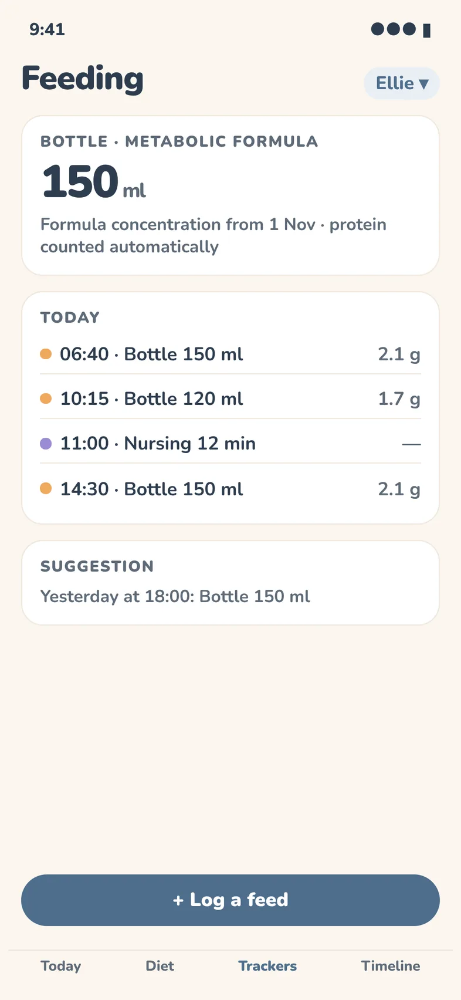
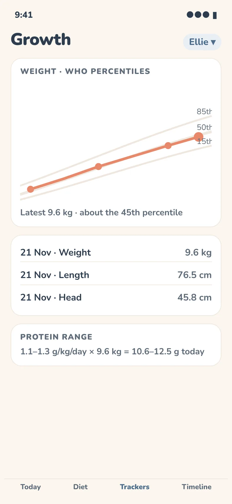

Features
Everything in Krestrel, built around the metabolic diet.
Krestrel is a free iPhone and iPad app for parents of children with inherited metabolic conditions. Here is everything it does, starting with the diet.
Diet & protein
Daily protein against your dietitian’s range
Krestrel tracks total protein for the day against a minimum, a maximum or both, set by your metabolic dietitian. A per-kilogram range is worked out against your child’s most recent weight, so the allowance moves as they grow.
- Meals and formula add up into one running total
- The range is shown as a calm band, with no red or green verdict
- Amino-acid estimates (for example lysine, phenylalanine or leucine) from the mg-per-gram factor your dietitian gives you, labelled as estimates
- Values are frozen when you log, so correcting a food never changes past days

Meal logging
Meal logging and the food database
Search one result per food, choose raw or cooked, and enter the weight from your kitchen scale. Krestrel scales the per-100 g values and shows “g left today” on the log.
- Food-composition data from USDA FoodData Central, the Canadian Nutrient File, UK CoFID, German BLS and French Ciqual
- Custom foods and package-label entry (per serving or per 100 g)
- Saved meals for the plates you make every week
- Import your dietitian’s food list from CSV
- First-foods journal and a reaction log that feeds the allergy list

Formula & feeds
Bottles, metabolic formula and nursing
Log breast milk, formula or metabolic formula by volume. Protein comes from your child’s formula concentration, per 100 ml or per 100 g of powder, and a recipe change applies from the date you choose.
- Nursing, sleep, pumping and tummy-time timers shared across the care circle
- Yesterday’s feed at the same time suggested with one tap
- Spit-up, vomiting, refused and fussy outcomes
- A configurable day start so overnight feeds stay with the right day

Labs
Lab results against your clinic’s target range
Record blood levels against the target range your clinic set, and see each analyte’s trend with the target band shaded. Import a lab PDF and review every value before anything is saved.
- Phenylalanine, leucine, methionine, lysine, homocysteine, ammonia and any other analyte
- “Less than” values and one-sided ranges
- Text PDFs read on the server, scanned PDFs read on your device
- Duplicate results merged, original reports stored privately

Growth
Growth on WHO percentile curves
Weight, length or height and head circumference, charted against WHO percentile curves from birth to five years. The newest weight drives a per-kilogram protein range.
- kg, lb or lb + oz; cm or ft + in
- Percentiles shown in reports and tables

Medicines
Medicines and doses
Keep the medication list in one place and log each dose. A dose one caregiver logs shows on everyone’s phone, with the time since the last one on the Today screen and the home-screen widget.
- Active and discontinued medicines
- Recent doses and time since the last dose
Appointments
Appointments, providers and questions
One record per provider, grouped by specialty, with visits and notes. Questions you think of between visits are saved to the provider and carried forward until they’re answered.
- Visit notes you can find months later
- Archive providers you no longer see

Health log
Health log
Record seizures (with type), vomiting, hypoglycemia, lethargy, fever, allergic reactions and hospital stays, each with a severity, alongside the feeds and doses around them.
- Temperature with measurement site
- Milestones and diapers too
Emergency plan
Emergency and sick-day plan
Write down your team’s sick-day instructions and contacts once. Krestrel builds an ER letter from your child’s profile, medicines, protein limits, allergies and that plan, and you can share it as text from the waiting room.
- Available offline
- Contacts with phone numbers

Care circle
Care circle and permissions
Invite co-parents, grandparents and sitters by email or link. Primary caregivers set what each person can do, in groups: logging, photos, reports, clinical changes, private areas and AI apps.
- Several primary caregivers allowed
- Permissions enforced by the database, not just hidden in the app
- Multiple children with a quick switcher
Works with AI
Works with Claude and ChatGPT
Connect Krestrel to Claude or ChatGPT and ask about, or add to, the care log in plain words. You choose each child and each area, and whether the assistant may read or also add.
- Log meals, feeds, doses and health events; add appointment questions
- Lab values an assistant reads from a report wait as drafts you confirm
- Every request listed under Recent AI activity; one switch turns it off for the family
- An assistant can’t edit or delete anything or change settings

Timeline & reports
Timeline, reports and export
See every entry on one day as a list or a calendar, look at trends over any range of days, and email yourself a CSV of your history, de-identified by default.
- Daily average, total and days logged
- Growth table with percentiles and lab charts
Everyday
Widgets, offline use and comfort settings
Home-screen widgets show the time since the last bottle, meal, diaper and dose. Krestrel keeps working offline and sends new entries when you’re back online.
- Dark mode and adjustable text size
- Metric or US units
- Delete your account and all records from Settings
Krestrel is a record-keeping tool, not medical advice. It doesn’t recommend diets, restrictions or amounts. Nutrient figures are reference values from public food-composition tables (USDA FoodData Central and others) and may not match specific products. Always confirm values and your child’s plan with your metabolic dietitian and care team.
Start your child’s care log today.
Free on iPhone and iPad. No ads, no tracking.